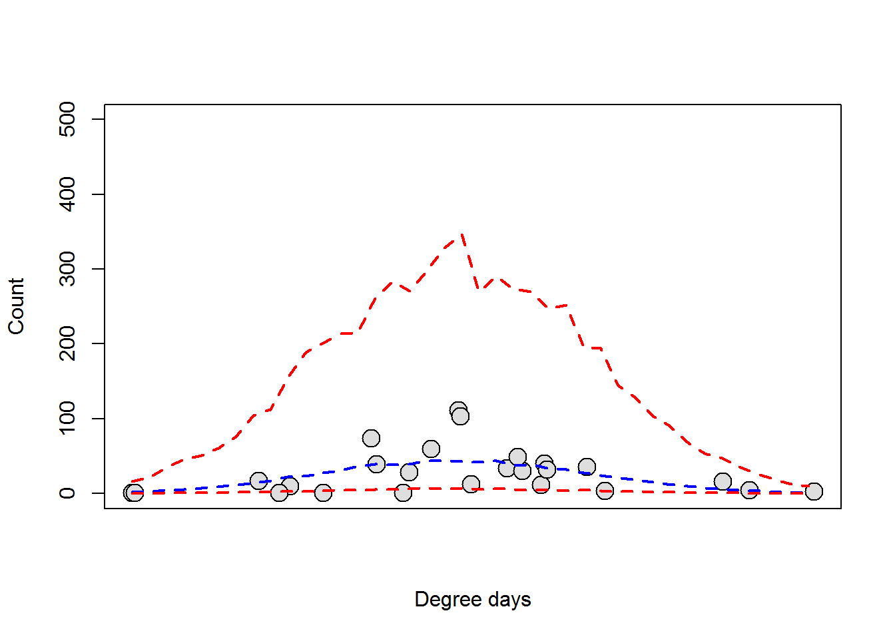

Generalized linear mixed models (GLMM)
This week in lecture, we introduced the generalized linear mixed model (GLMM). As we have discussed, the GLMM is to the linear mixed model as the GLM is to the general linear model (ANOVA, linear regression, ANCOVA, etc.). That is to say, the GLMM is just an LMM that assumes some error distribution other than normal. This week in lab, we will practice running GLMMs using restricted maximum likelihood estimation (REML) in the lme4 package in R, and using Bayesian estimation in JAGS through the R2jags package in R. We will play with a couple of different data sets this week, and give you the choice of which to pursue further.
Choose your own data adventure
This week we will work with two different data examples to demonstrate a couple different applications of GLMM to non-normal data. The binomial and Poisson distributions are commonly used to describe biological and ecological processes due to the nature of the data we collect. Therefore, one of the examples this week will use a Bernouli response (special case of the binomial where N = 1), and the other will use a Poisson (count) response to demonstrate the application of GLMMs in biology and ecology. Please realize that these examples hold true for any response that takes similar forms, and they are easily generalized to include a wide variety of other sampling distributions.
For our assignments this week, students can choose to work with either one of these examples, and must only submit a write-up for one of them. You choose, although I encourage you to explore with both of them to investigate similarities and differences in how things work for the models.
Walleye phenology
Walleye in spring
It is that magical time of year again. Birds are returning from their winter vacations, and all of the critters are twitterpaited. The salamanders and frogs are making there way to breeding pools in the soaked leaf litter, and even the fish are warming up for the spawn. There’s only one problem: we don’t quite know when those fish are going to get into the streams so we can catch them, clip their fins, put some tags in them, and study their every move (…muwahaha…).
For this first example, we will attempt to predict counts of walleye, Sander vitreus, in spawning streams of Otsego Lake based on historical counts and climate data.
Walleye data
We begin by reading in the data set:
# Read in the walleye data
wae = read.csv('http://employees.oneonta.edu/stichds/data/otsegoRunCounts.csv', stringsAsFactors = FALSE)Have a look at the first ten lines of the data set:
head(wae, 10)## date site Length..mm. Weight..gm. Sex Stage
## 1 4/5/2009 Cripple Creek 450 NA Male Ripe
## 2 4/5/2009 Cripple Creek 370 NA Male Ripe
## 3 4/5/2009 Cripple Creek 501 NA Female Ripe
## 4 4/5/2009 Cripple Creek 474 NA Female Hard
## 5 4/9/2009 Cripple Creek 480 1021 Male Ripe
## 6 4/16/2009 Cripple Creek 540 NA Male Ripe
## 7 4/16/2009 Cripple Creek 605 NA Female Ripe
## 8 4/16/2009 Cripple Creek 553 NA Male Ripe
## 9 4/16/2009 Cripple Creek 550 NA Male Spent
## 10 4/16/2009 Cripple Creek 508 NA Male RipeAnd check out the data structure
str(wae)## 'data.frame': 1399 obs. of 6 variables:
## $ date : chr "4/5/2009" "4/5/2009" "4/5/2009" "4/5/2009" ...
## $ site : chr "Cripple Creek" "Cripple Creek" "Cripple Creek" "Cripple Creek" ...
## $ Length..mm.: int 450 370 501 474 480 540 605 553 550 508 ...
## $ Weight..gm.: int NA NA NA NA 1021 NA NA NA NA NA ...
## $ Sex : chr "Male" "Male" "Female" "Female" ...
## $ Stage : chr "Ripe" "Ripe" "Ripe" "Hard" ...These data are measurements of the length and mass of individual walleye at various reproductive stages that were captured in spawning tributaries of Otsego Lake during the 2009 and 2013 spawning season.
We will use the data to predict number of walleye we expect to see each day in the spawning tribs during spring 2017 based on historical counts.
Climate data
For this example, we are interested in predicting the timing of the walleye run. Generally speaking, phenology of spawning events in fishes and many other animals is driven by circannual rhythms entrained by photoperiod. However, temperature often acts as a trigger for releasing behavior related to spawning…Translation: if we want to predict timing of the spawning run, we need to have data for photoperiod and temperature, too!
I collected some of this information ahead of time for you. Temperature, precipitation, and snow depth data were downloaded from the following, surely reliable, website.
Read in the data an have a look at the structure
# Read in the climate data
climate=read.csv('http://employees.oneonta.edu/stichds/data/tempdata.csv', stringsAsFactors = FALSE)
# Have a look at the data structure
str(climate)## 'data.frame': 555 obs. of 3 variables:
## $ date : chr "1/1/2009" "1/2/2009" "1/3/2009" "1/4/2009" ...
## $ high_f: num 19.9 17.1 28 28 33.1 32 35.1 34 30 21.9 ...
## $ low_f : num 0 3 12.9 12.9 10.9 12 12 27 12.9 0 ...Data management
Walleye counts
Okay, so now we have fish records by date and we have some climate data for those same dates and then some. Now, we need to smash all of those data together so we can use them.
Our first step will be to summarize the walleye data by date. To do this, we will use the plyr package in R.
# Load the package
library(plyr)Tally up total counts of walleye in each stream on each day.
# Make a column of ones that we can sum
wae$pres = 1
weye = ddply(wae, c('date', 'site'), summarize, counts = sum(pres))Climate data
Next, we will get the climate data in order.
Because temperature fluctuates pretty widely in the spring, we often think of accumulated thermal units (ATU) or degree days as having more of an influence on the reproductive biology of many organisms rather than just absolute temperatures. You can think of degree days as the sum of all temperatures from some starting date until some ending date. In our case, we will add up the degree days from January 1 until date i in our dataframe to get degree days for each observation.
First, we will convert our temperatures to celcius like the rest of the world.
# Convert from farenheit to celcius
climate$high_c = (climate$high_f-32)*5/9
climate$low_c = (climate$low_f-32)*5/9Next, we will calculate degree days (in \(^{\circ}\)C) using both the high temp and the low temp. We will start by calculating the mean of highs and lows, and then add them up for the time period of interest. Ideally, we would be working with averages, but this will do for now.
# Calculate mean based on daily highs and lows
climate$mean_c = apply(climate[ , 4:5], 1, mean)
# Exclude values less than zero from this calculation
climate$ddPrep = climate$mean_c
climate$ddPrep[climate$ddPrep < 0] = 0
# Change date to a date object from factor
# Load lubridate package
library(lubridate)
# Convert to date
climate$date = as.Date(as.character(climate$date),
format="%m/%d/%Y")
# Get ordinal date
climate$day = yday(climate$date)
# Get year
climate$year = year(climate$date)
# Sort climate data by date and year
climate = climate[with(climate, order(year, day)), ]
# Add up the values to calculate degree days for each year
# Split the dataframe up into a list with a df for each year
test = split(climate$ddPrep, climate$year)
# Replace NA values of temperature with arithmetic mean of
# preceding and following elements
library(zoo)
test = mapply(na.approx, test)
# Calculate degree days for each year
dd = mapply(cumsum, test)
# Unlist the result and add it to the climate data
climate$dd = unlist(dd)
climate$dd2 = climate$dd^2We can now add degree days to our fish data. What? Fish data? I forgot we had that!
To wrap up our climate analysis, we will quickly calculate day length at Otsego Lake based on lattitude for each day of our historical records using the geosphere package.
library(geosphere)
climate$daylight = daylength(lat = 42.76, doy = climate$day)
climate$daylight2 = climate$daylight^2Our final job will be to add all of the climate data to our new dataframe containing walleye counts. This is relatively easy to do in R using the merge function, like so:
# First, format the date column in the weye df
weye$date = as.Date(as.character(weye$date),
format="%m/%d/%Y")
# Merge the two dataframes
eyes = merge(weye, climate)
# Finally, we are going to get rid of Leatherstocking
# for now because there are few data points there
eyes = eyes[eyes$site!='Leatherstocking Creek', ]
# Check to see how much data we have left
nrow(eyes)## [1] 55Wow, that’s rough! We went from several hundred lines of data to just a handful pretty quickly!!
Modeling counts
After our data management triathalon, we can finally model walleye counts as a function of some explanatory variables of interest. As has become our practice during the last several lessons, we will do this in both frequentist and Bayesian frameworks.
REML Estimation
We start by estimating a model using REML. Let’s say for the sake of argument that we are simply interested in the lake-wide mean of our counts so that we know when students should, for example, be heading out to tributaries to look for walleyes in streams.
For now, we will model walleye count as a function of photoperiod, with a random effect of site on the intercepts. This model assumes that there is variability in counts of spawning individuals between sites, but that the relationship between photoperiod and count is the same across all sites. In this case, we will specify a quadratic relationship between counts and dates because we expect the number of fish to increase to some point in the run before it decreases. We are not interested
In the lme4 package, the model might look something like this:
# Load the package
library(lme4)
# Make the model
waeMod1 = glmer(counts~dd + dd2 + (1|site), data=eyes, family=poisson)
# Have a look-see at the results
summary(waeMod1)## Generalized linear mixed model fit by maximum likelihood (Laplace
## Approximation) [glmerMod]
## Family: poisson ( log )
## Formula: counts ~ dd + dd2 + (1 | site)
## Data: eyes
##
## AIC BIC logLik deviance df.resid
## 1195.2 1203.2 -593.6 1187.2 51
##
## Scaled residuals:
## Min 1Q Median 3Q Max
## -6.257 -2.652 -0.781 2.096 13.001
##
## Random effects:
## Groups Name Variance Std.Dev.
## site (Intercept) 0.006751 0.08216
## Number of obs: 55, groups: site, 3
##
## Fixed effects:
## Estimate Std. Error z value Pr(>|z|)
## (Intercept) -5.402e+00 5.369e-01 -10.06 <2e-16 ***
## dd 1.094e-01 6.693e-03 16.35 <2e-16 ***
## dd2 -3.290e-04 2.059e-05 -15.98 <2e-16 ***
## ---
## Signif. codes: 0 '***' 0.001 '**' 0.01 '*' 0.05 '.' 0.1 ' ' 1
##
## Correlation of Fixed Effects:
## (Intr) dd
## dd -0.984
## dd2 0.956 -0.991
## fit warnings:
## Some predictor variables are on very different scales: consider rescaling
## convergence code: 0
## unable to evaluate scaled gradient
## Model failed to converge: degenerate Hessian with 1 negative eigenvaluesCrap! Our model failed to converge. It looks like this is probably because we have variables on really different scales, and because we have a lot of colinearity between them. So, let’s try standardizing our covariates to see what we can do about that:
# Standardize photoperiod
eyes$sdd = scale(eyes$dd)
# Make the model
waeMod2 = glmer(counts~sdd + I(sdd^2) + (1|site), data=eyes,
family=negative.binomial(theta=1000))
# Have a look-see at the results
summary(waeMod2)## Generalized linear mixed model fit by maximum likelihood (Laplace
## Approximation) [glmerMod]
## Family: Negative Binomial(1000) ( log )
## Formula: counts ~ sdd + I(sdd^2) + (1 | site)
## Data: eyes
##
## AIC BIC logLik deviance df.resid
## 1172.5 1182.6 -581.3 1162.5 50
##
## Scaled residuals:
## Min 1Q Median 3Q Max
## -6.1202 -2.6201 -0.7898 2.0706 12.8880
##
## Random effects:
## Groups Name Variance Std.Dev.
## site (Intercept) 0.006653 0.08157
## Number of obs: 55, groups: site, 3
##
## Fixed effects:
## Estimate Std. Error z value Pr(>|z|)
## (Intercept) 3.67562 0.06149 59.776 < 2e-16 ***
## sdd 0.23311 0.04584 5.085 3.68e-07 ***
## I(sdd^2) -0.83656 0.05294 -15.802 < 2e-16 ***
## ---
## Signif. codes: 0 '***' 0.001 '**' 0.01 '*' 0.05 '.' 0.1 ' ' 1
##
## Correlation of Fixed Effects:
## (Intr) sdd
## sdd -0.038
## I(sdd^2) -0.363 -0.085Okay, looks like we are doing a lot better with this now.
As we look through these results, we can see that we have a significant effect of daylight on spawning behavior. What’s more is that our count of spawning fish appears to increase during the year to a point before it starts to decrease.
Now, if we want, we can make a graph to show these predictions. Here, we make predictions for all years, and then we plot those predictions for a single site (Shadow Brook).
# Load the merTools package
library(merTools)
# Make a new dataframe for prediction
sdd = seq(from = min(eyes$sdd), to = max(eyes$sdd), by = .1)
site = sort(rep(unique(eyes$site), length(sdd)))
sdd = rep(sdd, length(unique(eyes$site)))
newdata = data.frame(sdd)
# Simulate predictions from the relationship stored in the model fit using
# our new data
PI <- predictInterval(merMod = waeMod2, newdata = newdata,
level = 0.95, n.sims = 1000,
stat = "median", type="linear.prediction",
include.resid.var = TRUE)
PI = apply(PI, c(1, 2), exp)
# Plot the raw data but don't label the x-axis
# because we will want to add unstandardized labels
# even though our regression used standardized labels
plot(eyes$sdd[eyes$site=='Shadow Brook'],
eyes$counts[eyes$site=='Shadow Brook'],
ylim = c(0,500), pch=21,
bg=c('gray87', 'gray60','gray40', 'black')[as.factor(eyes$year)],
cex=1.9, xlab='Degree days', ylab='Count',
xaxt='n'
)
# Add lines to the plot
lines(newdata$sdd[site=='Shadow Brook'],
PI[site=='Shadow Brook',1], lty=2, lwd=2, col='blue') # Mean
lines(newdata$sdd[site=='Shadow Brook'],
PI[site=='Shadow Brook',2], lty=2, lwd=2, col='red') # Lower
lines(newdata$sdd[site=='Shadow Brook'],
PI[site=='Shadow Brook',3], lty=2, lwd=2, col='red') # Upper
We could also do this using our global parameter estimates and some new data. We see that our mean predictions aren’t terrible, but there is quite a bit of uncertainty here.
Bayesian estimation
We can fit the same model in the Bayesian framework, too. Here we specify it just as we have during the past couple of weeks.
# Write model
modelstring="
model {
# Likelihood
for(i in 1:n){
count[i] ~ dnegbin(p[i], r) # The random variable
p[i] <- r/(r+lambda[i])
log(lambda[i]) <- mu[i]
mu[i] <- alpha[site[i]] + beta*sdd[i] + beta2*(sdd[i]^2) # Expectation
}
# Priors
for (i in 1:ngroups){
alpha[i] ~ dnorm(mu.int, tau.int) # Random intercepts
}
mu.int ~ dnorm(0, 0.1) # Mean hyperparameter for random intercepts
tau.int <- 1 / (sigma.int * sigma.int)
sigma.int ~ dunif(0, 100) # SD hyperparameter for random intercepts
beta ~ dnorm(0, 0.001) # Common slope
taub <- 1 / ( sigmab * sigmab) # Residual precision
sigmab ~ dunif(0, 100) # Residual standard deviation
beta2 ~ dnorm(0, 0.0001) # Common slope
taub2 <- 1 / ( sigmab2 * sigmab2) # Residual precision
sigmab2 ~ dunif(0, 100) # Residual standard deviation
r ~ dgamma(0.01, 0.001) # Site-specific overdispersion
}
"
writeLines(modelstring, "waeModel.txt")
# Bundle data
wae.data <- list(count=eyes$count,
site = as.numeric(as.factor(eyes$site)),
sdd = as.vector(eyes$sdd),
ngroups = length(unique(eyes$site)),
n = nrow(eyes)
)
# Inits function
inits <- function(){
list(
alpha = rnorm(length(unique(eyes$site)), 0, 1),
r = rgamma(length(unique(eyes$site)), 0.1, 0.01),
beta = rnorm(1, 0, 1),
beta2 = rnorm(1, 0, 10),
mu.int = rnorm(1, 0, 1),
sigma.int = rlnorm(1),
sigmab = rlnorm(1),
sigmab2=rlnorm(1)
)}
# Parameters to estimate
parameters <- c("alpha", "beta", "beta2","mu.int", "sigma.int", "sigmab",
"sigmab2")
# MCMC settings
ni <- 5000
nb <- 1000
nt <- 10
nc <- 3
# Load the package
library(R2jags)
# Run the Gibbs sampler
out <-jags(wae.data, inits=NULL, parameters, "waeModel.txt", n.thin=nt,
n.chains=nc, n.burnin=nb, n.iter=ni, progress.bar = 'none')## Compiling model graph
## Resolving undeclared variables
## Allocating nodes
## Graph information:
## Observed stochastic nodes: 55
## Unobserved stochastic nodes: 10
## Total graph size: 556
##
## Initializing model# Print the results
print(out$BUGSoutput$summary[ , c(1:3, 7:9)], digits=3)## mean sd 2.5% 97.5% Rhat n.eff
## alpha[1] 3.500 0.336 2.7980 4.169 1.00 770
## alpha[2] 3.742 0.243 3.2871 4.267 1.00 460
## alpha[3] 3.663 0.211 3.2636 4.104 1.00 1200
## beta 0.473 0.172 0.1234 0.800 1.00 1200
## beta2 -0.760 0.130 -1.0168 -0.489 1.00 890
## deviance 438.314 3.485 433.7105 446.957 1.00 1200
## mu.int 3.467 0.826 1.1719 4.354 1.04 350
## sigma.int 0.769 1.277 0.0204 4.706 1.01 160
## sigmab 48.754 28.995 2.0478 97.745 1.00 1200
## sigmab2 48.528 28.084 2.9644 97.152 1.00 1200We notice that all parameters converge. Note that if we run this without standardizing our degree day covariate, convergence is not quite as clean. This is likely because of correlations between dd and dd2. Just as we did for the REML model, we could plot predictions for these results…
# Make a new sequence of standardized degree days
sdd = seq(-3, 3, .1)
# Make prediction from the model parameters
fit = exp(
mean(out$BUGSoutput$sims.list$mu.int)+
mean(out$BUGSoutput$sims.list$beta)*sdd+
mean(out$BUGSoutput$sims.list$beta2)*(sdd^2))
lcis = exp(
quantile(out$BUGSoutput$sims.list$mu.int, probs=.025)+
quantile(out$BUGSoutput$sims.list$beta, probs=.025)*sdd+
quantile(out$BUGSoutput$sims.list$beta2, probs=.025)*(sdd^2))
ucis = exp(
quantile(out$BUGSoutput$sims.list$mu.int, probs=.975)+
quantile(out$BUGSoutput$sims.list$beta, probs=.975)*sdd+
quantile(out$BUGSoutput$sims.list$beta2, probs=.975)*(sdd^2))
# Plot the predictions
plot(eyes$sdd, eyes$counts,
pch=21, bg='gray', cex=1.2,
ylim=c(0, max(eyes$counts)+50),
xlim=c(-3, 3),
xlab='Degree days (C)', ylab='Count of spawners',
xaxt='n', yaxt='n')
lines(sdd, fit, lwd=2, lty=1, col='blue')
lines(sdd, lcis, lwd=2, lty=2, col='red')
lines(sdd, ucis, lwd=2, lty=2, col='red')
# Add a new x-axis
axis(side=1,
at=seq(-3, 3, 0.5),
labels=
#Get dd on original scale from a sequence
# of new standardized values
round(
seq(-3, 3, 0.5)*sd(eyes$dd)+mean(eyes$dd)
)
)
# Add a rotated y-axis
axis(2, las=2)
Your mission
For this option, I want you to do the following:
- Use the degree day data from 2018 that we made (waaaay up top) to predict mean and 95% CI for counts from each of the models above, using any of the methods you have learned in this course. Treat these like sequences that we’ve been passing to the
newdataargument in thepredictfunction all semester, or that we have recently been using to make predictions by hand. Note that you will not get the back end of the curve because it is early April right now!
- Tell me how many walleye you predicted that the crew caught on Tuesday 10 April 2018. Then, tell me how many you predict they will catch 12 April 2018 (tonight).
Plant surveys
Big milfoil problems
For this example, we will look at increases or decreases in Eurasian watermilfoil (Myriophylum spicatum) following herbicide treatment at different doses. We will use a Bernoulli response (1 or 0) to test effects of secchi depth on treatment response across 30 sites.
Data
Start by reading in the data:
# Read in the plant data
plants = read.csv("http://employees.oneonta.edu/stichds/data/plants.csv")This is a pretty straightforward data set compared to the walleye phenology set (hopefully that is not what led you here). We have 5 paired samples of Eurasian watermilfoil from each of 30 sites before and after treatment with herbicide. Those data have been condensed to indicate whether the species increased or decreased at each site following herbicide application. Here, we will investigate the influence of Secchi depth (an index for water clarity where greater values indicate clearer water) on this response, while accounting for random variation between sites.
Estimation with REML
To start with, we will fit the model using REML. Here, we need to remember to specify a site-specific random effect on the intercept and we need to give R the family for our link function.
# Fit the model and store it to an object
plantMod1=glmer(increase~secchi+(1|site), data=plants, family=binomial)
# Take a look at the results
summary(plantMod1)## Generalized linear mixed model fit by maximum likelihood (Laplace
## Approximation) [glmerMod]
## Family: binomial ( logit )
## Formula: increase ~ secchi + (1 | site)
## Data: plants
##
## AIC BIC logLik deviance df.resid
## 90.4 99.4 -42.2 84.4 147
##
## Scaled residuals:
## Min 1Q Median 3Q Max
## -0.5454 -0.3472 -0.2958 -0.1905 4.6690
##
## Random effects:
## Groups Name Variance Std.Dev.
## site (Intercept) 0 0
## Number of obs: 150, groups: site, 30
##
## Fixed effects:
## Estimate Std. Error z value Pr(>|z|)
## (Intercept) 2.1638 2.3519 0.920 0.3576
## secchi -1.3904 0.7411 -1.876 0.0606 .
## ---
## Signif. codes: 0 '***' 0.001 '**' 0.01 '*' 0.05 '.' 0.1 ' ' 1
##
## Correlation of Fixed Effects:
## (Intr)
## secchi -0.992After a quick look at the results, we see that Secchi depth has a significant, poositive effect on the probability that plant biomass will increase following this herbicide application.
We could make a graph of these results as follows:
# First, make a function to invert the logit
invlogit=function(x){exp(x)/(1+exp(x))}
# Now we can make predictions
newSecchi = seq(0, 5, 0.10)
preds = -4.744 + 1.980*newSecchi
plot(newSecchi, invlogit(preds), type='l', lwd=2, col='blue')
Bayesian estimation
Now, we will estimate a model using Bayesian methods.
modelstring="
model{
# Priors
for(i in 1:ngroups){
alpha[i] ~ dnorm(mu.int, tau.int) # Random intercepts
}
mu.int ~ dnorm(0, 0.001) # Mean hyperparameter for ran. intercepts
tau.int <- 1/(sigma.int*sigma.int) # Precision for random intercepts
sigma.int ~ dunif(0, 100) # SD hyperparameter for ran. intercepts
beta ~ dnorm(0, 0.001) # Common slope for beta
# Likelihood
for(i in 1:N){
y[i] ~ dbern(mu[i])
logit(mu[i]) <- alpha[site[i]] + beta*secchi[i]
}
}
"
writeLines(modelstring, "plantModel.txt")Make the data
# Package the data in a list for JAGS
jags.data <- list(
y = plants$increase,
site = plants$site,
secchi=plants$secchi,
ngroups=length(unique(plants$site)),
N = nrow(plants)
)Define parameters for monitoring
# Specify the parameters we want to monitor
parameters = c("alpha", "beta", "mu.int", "sigma.int")Specify initial values
# Make a function to declare some initial values.
inits = function(){
list(
alpha = rnorm(length(unique(plants$site)), 0, 2),
beta = rnorm(1,1,1),
mu.int = rnorm(1,0,1),
sigma.int = rlnorm(1)
)
}Define MCMC settings for Gibbs sampler
# MCMC settings
ni <- 15000
nt <- 3
nb <- 5000
nc <- 3Run the model
## Compiling model graph
## Resolving undeclared variables
## Allocating nodes
## Graph information:
## Observed stochastic nodes: 150
## Unobserved stochastic nodes: 33
## Total graph size: 584
##
## Initializing model# Load the R2jags package
library(R2jags)
# Call JAGS from R and run the model
plant_glmm <- jags(jags.data, inits, parameters,
"plantModel.txt", n.chains = nc, n.thin = nt, n.iter = ni,
n.burnin = nb)Look at the results
# Print the model
print(plant_glmm, digits=3)## Inference for Bugs model at "plantModel.txt", fit using jags,
## 3 chains, each with 15000 iterations (first 5000 discarded), n.thin = 3
## n.sims = 10002 iterations saved
## mu.vect sd.vect 2.5% 25% 50% 75% 97.5% Rhat n.eff
## alpha[1] 3.417 2.652 -1.457 1.343 3.450 5.213 8.499 1.496 8
## alpha[2] 3.406 2.638 -1.436 1.326 3.413 5.170 8.510 1.496 8
## alpha[3] 3.083 2.569 -1.646 1.078 3.145 4.849 7.959 1.489 8
## alpha[4] 3.464 2.691 -1.437 1.351 3.473 5.275 8.660 1.488 8
## alpha[5] 3.209 2.633 -1.614 1.151 3.245 5.008 8.293 1.484 8
## alpha[6] 3.483 2.705 -1.453 1.355 3.492 5.309 8.678 1.488 8
## alpha[7] 3.407 2.645 -1.425 1.307 3.439 5.185 8.485 1.487 8
## alpha[8] 3.357 2.611 -1.434 1.286 3.381 5.129 8.371 1.498 8
## alpha[9] 3.189 2.617 -1.589 1.120 3.233 4.983 8.161 1.498 8
## alpha[10] 3.377 2.626 -1.463 1.285 3.399 5.146 8.419 1.498 8
## alpha[11] 3.244 2.652 -1.583 1.152 3.297 5.043 8.334 1.482 8
## alpha[12] 3.255 2.646 -1.557 1.182 3.298 5.092 8.288 1.483 8
## alpha[13] 3.167 2.601 -1.624 1.130 3.253 4.966 8.092 1.493 8
## alpha[14] 3.216 2.630 -1.572 1.154 3.272 5.000 8.278 1.492 8
## alpha[15] 3.185 2.606 -1.595 1.140 3.229 4.968 8.133 1.496 8
## alpha[16] 3.240 2.652 -1.658 1.159 3.286 5.039 8.262 1.485 8
## alpha[17] 3.363 2.620 -1.437 1.303 3.399 5.130 8.446 1.497 8
## alpha[18] 3.128 2.592 -1.636 1.097 3.187 4.890 8.035 1.493 8
## alpha[19] 3.110 2.564 -1.576 1.095 3.155 4.866 7.993 1.488 8
## alpha[20] 3.257 2.649 -1.566 1.175 3.308 5.046 8.356 1.492 8
## alpha[21] 3.228 2.639 -1.602 1.147 3.289 4.985 8.293 1.497 8
## alpha[22] 3.372 2.620 -1.461 1.318 3.391 5.146 8.384 1.501 8
## alpha[23] 3.318 2.587 -1.447 1.275 3.371 5.071 8.241 1.496 8
## alpha[24] 3.200 2.618 -1.601 1.129 3.237 4.978 8.205 1.498 8
## alpha[25] 3.150 2.589 -1.600 1.134 3.220 4.900 8.083 1.491 8
## alpha[26] 3.206 2.517 -1.467 1.221 3.265 4.924 7.988 1.496 8
## alpha[27] 3.375 2.629 -1.452 1.310 3.408 5.142 8.432 1.495 8
## alpha[28] 3.233 2.633 -1.582 1.159 3.281 5.023 8.283 1.483 8
## alpha[29] 3.394 2.637 -1.468 1.318 3.426 5.173 8.436 1.498 8
## alpha[30] 3.240 2.646 -1.597 1.149 3.288 5.033 8.307 1.485 8
## beta -1.790 0.823 -3.391 -2.345 -1.775 -1.136 -0.307 1.516 7
## mu.int 3.275 2.578 -1.449 1.237 3.340 5.017 8.114 1.517 7
## sigma.int 0.416 0.358 0.012 0.135 0.328 0.606 1.304 1.014 320
## deviance 86.184 2.944 80.425 84.527 85.881 87.865 92.638 1.027 110
##
## For each parameter, n.eff is a crude measure of effective sample size,
## and Rhat is the potential scale reduction factor (at convergence, Rhat=1).
##
## DIC info (using the rule, pD = var(deviance)/2)
## pD = 4.3 and DIC = 90.4
## DIC is an estimate of expected predictive error (lower deviance is better).As you can see from the output, we have estimates of probability of increase in plant biomass on the logits scale for each site. If we wanted to see the overall average effect of Secchi depth on treatment effectiveness, we could look at it like this:
newSecchi = seq(0, 10, 1)
preds = plant_glmm$BUGSoutput$mean$mu.int + plant_glmm$BUGSoutput$mean$beta*newSecchi## Warning in plant_glmm$BUGSoutput$mean$beta * newSecchi: Recycling array of length 1 in array-vector arithmetic is deprecated.
## Use c() or as.vector() instead.## Warning in plant_glmm$BUGSoutput$mean$mu.int + plant_glmm$BUGSoutput$mean$beta * : Recycling array of length 1 in array-vector arithmetic is deprecated.
## Use c() or as.vector() instead.preds = invlogit(preds)
plot(newSecchi, preds, type='l', col='blue', xlab='Secchi depth (m)', ylab='Probability of increase')Your mission
For this option, I want you to do the following:
- Run the model out to convergence and make sure n.eff is sufficiently large.
- Plot the overall mean posterior predictions for each iteration of the simulation in gray, and show lines for the mean, and 95% CRI, as we did in lab last week (and in the LMM lecture, and in the GLMM lecture).
Copyright © 2017 Dan Stich. All rights reserved.